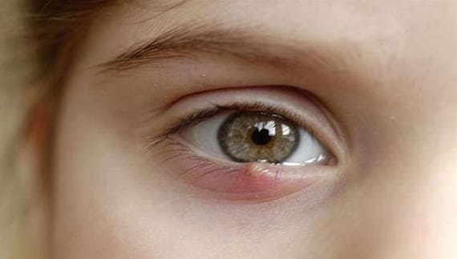

Ячмень — это бактериальное воспаление желез, расположенных у основания века, проявляющееся образованием фурункула у края века. Он болит, когда ребенок его трогает, но, как правило, не влияет на зрение и не приводит к воспалению самого глазного яблока. Это может сопровождаться блефаритом — воспалением век — или появляться вследствие него.
ЧТО ДЕЛАТЬ
Лечите ячмень:
Иногда ячмень может сформироваться внутри века и превратиться в опухоль, называемую гордеолум. Или если ячмень появляется на веке и превращается в очень большую шишку, он называется халазион. Эти заболевания лечатся так же, как ячмень, но дольше.
Халазион вначале выглядит как ячмень, но позже может превратиться в болезненную опухоль, которая пройдет сама по себе в течение нескольких месяцев. Если опухоль сохраняется дольше, окулисту, возможно, придется дренировать ее. Горячие компрессы поспособствуют заживлению халазиона. Местное применение антибиотиков, как правило, не дает результата. |
Здоровье ребенка от докторов Сирс / Сирс У. и др.